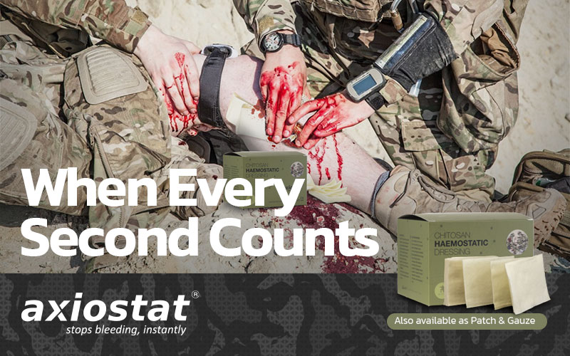

A Quick-acting Haemostat Dressing Is Essential In Every First-aid Kit. Explained.

Uncontrolled bleeding or haemorrhage is the leading cause of death on the battlefield, especially if medical care is delayed or unmet.
Haemorrhage can result from various injuries, such as gunshot wounds, shrapnel wounds, and blast injuries, and lead to shock, organ failure, and death. To address this issue, military forces receive specialised training in advanced medical interventions, such as use of a tourniquet or haemostat dressing.
In addition to the combat field, haemostats are also used by disaster response teams and civilian forces for emergency bleeding care. Let's know more!
Importance of Haemostat Dressings in Battlefield First-aid Kits

Effective triage and Survival:
Haemostatic dressings are specialised devices to stop or control bleeding in situations where traditional methods, such as direct pressure or tourniquets, may not be effective. The dressings contain biomaterials like chitosan or other inorganic materials, such as kaolin, which promote clotting and aid in bleeding control.
In combat situations, haemostatic dressings can be critical in helping soldiers to survive serious bleeding injuries and continue with their mission. By controlling bleeding quickly, these dressings can help prevent shock and other complications that could threaten the lives of injured soldiers.
Adaptability & Ease of deployment:
The salient tactic for defence is as simple as blending in the battlefield to be combat-ready. Keeping it in mind, the robustly packed haemostats stay damage free, regardless of terrain or environment, making them ideal for soldiers to carry in the field.
In addition, the package opens quickly and offers single-hand deployment while maintaining situational awareness in the field.
Battlefield confidence
In remote or high-stake operations, the unavailability of medical personnel creates risk for the injured soldiers.
Haemostat dressings are simple to apply and do not require any special training or expertise. Soldiers with minimal medical training can use these dressings to treat their bleeding injuries or those of their fellow soldiers. Knowing that they have access to immediate medical attention in an emergency can help alleviate their stress and anxiety. This, in turn, provides a sense of security.
Importance of Haemostats in Natural Disasters
According to a survey report (Doocy et al), in an earthquake, trauma injuries such as lacerations and contusions, limb fractures, and crush injuries to the head, thorax, and abdomen caused by buildings collapsing are commonly seen. These injuries can easily result in death due to uncontrolled bleeding.
In disaster scenarios (flood, earthquake, or tsunami), first responders may not have immediate access to medical care, so controlling bleeding at the site of injury becomes a challenge.
Haemostats stop bleeding quickly with the application of pressure and promote clotting. It can help stabilise the injured person and reduce the risk of complications such as hypovolemic shock, stroke, or death.
After a 7.8 magnitude earthquake claimed the lives of 5,000 plus people and destroyed thousands of buildings, rescuers in Turkey and Syria continued searching day and night in the hopes of finding more survivors beneath the debris.
The World Health Organization even announced that the death toll from the earthquake in southeast Turkey might increase eightfold.
The more severe the earthquake, the greater the likelihood of serious injuries and deaths, including deaths from bleeding. A haemostat can be used as an emergency aid to control bleeding and save lives.
Use of Haemostats In Civilian Forces
According to the national trauma institute, severe bleeding accounts for more than 35% of pre-hospital deaths and nearly 40% of deaths during the first 24 hours following injury in the civilian population. One-quarter of injured patients develop coagulopathy due to haemorrhage, haemodilution, hypothermia, or acidosis.
Haemostat dressings have been shown to improve outcomes of trauma injuries and can help reduce the risk of blood loss and other complications. Hence, haemostats are included in all emergency first-aid kits for civilian forces, such as law enforcement, fire departments, search and rescue teams, and wilderness guides.
By having the dressings on hand and knowing how to use them, civilian forces can be better prepared to respond to emergencies and save lives of both rescuers and victims.
Why Choose Axiostat Military For Bleeding Control
Chitosan-based Axiostat dressings in field first-aid kits have revolutionised how bleeding injuries are treated. Our Axiostat Military haemostatic dressings can control bleeding quickly and effectively, which is critical in high-stake operations where every second counts.
Axiostat is effective for traumatic injuries, even in cases where traditional methods such as direct pressure or tourniquet applications have failed.
“Axiostat is a wonderful product which we used during Gunshot wounds and helped to stop bleeding. This product has great scope in battlefields to help in controlling bleeding instantly and save lives,” confirmed by Commandant Medical, BSF, J&K, India.
Explore Our Military Product Range
Unique Features of Axiostat Military Haemostat Dressing
For Every Situation | For Every Injury
- Quick and effective bleeding control for a wide range of injuries within a few minutes.
- Easy administration by every first responder under austere conditions.
- No rebleeding and the dressing can be left on the injury site for 48 hours.
- Excellent biocompatibility with no adverse effects on healing and no thromboembolic complications.
- Painless removal and non-exothermic.
- Simple storage and best-in-class five-year shelf-life, even under extreme conditions.
Summary:
A haemostat dressing is an invaluable asset in military, civilian, and disaster management first-aid kits. When selecting a haemostat, it is necessary to consider factors such as, effectiveness, compatibility and usability.
Choose Axiostat. Choose to save a life.
References:
https://www.ncbi.nlm.nih.gov/pmc/articles/PMC6571652/https://www.ncbi.nlm.nih.gov/books/NBK535393/
https://www.east.org/content/documents/MilitaryResources/b/TCCC%20Eastridge%20Death%20on%20the%20Battlefield%20J%20Trauma%202012.pdf


 A
collaborative study with Harvard
A
collaborative study with Harvard